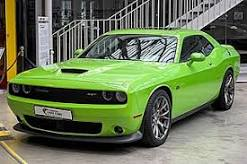

Para 1971, se le cambió la parrilla además de otras modificaciones a partir del modelo 1970. Se promocionó un nuevo Challenger T/A, pero nunca llegó a fabricarse. Posteriormente fue oficialmente abandonado, ya que Dodge se había retirado de las carreras Trans-Am. El R/T descapotable fue también abandonado y el paquete se comercializaba en los modelos base. El R/T 1971 tenía paragolpes en colores en combinación con la carrocería, ranuras de ventilación de frenos decorativas en sus flancos traseros y nuevas líneas adhesivas.
El motor de 383 plg³ (6,3 litros) todavía venía estándar en los modelos R/T, pero fueron recalibrados a 300 HP (304 CV; 224 kW) debido a una compresión más baja solicitada para cumplir con nuevas normas gubernamentales. El motor base era el 440, pero el 440+6 calibrado a 385 HP (390 CV; 287 kW) (5 hp menos que el 1970) y el Hemi, todavía calibrado a 425 HP (431 CV; 317 kW), continuaba comercializándose. Esto no detuvo la severa caída de ventas que sufrió en un 60% solamente en su segundo año.
En 1971, un reducido grupo de comerciantes de Dodge trató de incentivar las ventas con una nueva edición de 50 vehículos oficiales especialmente preparados para la carrera de las 500 Millas de Indianápolis. Esta edición eran los Hemi anaranjados descapotables con interiores en blanco, de los cuales solamente dos tenían opciones de alta performance (desempeño). Uno de los Pace Car (coche de seguridad) que eran descapotables, derrapó y chocó contra la cabina de prensa, hiriendo a varios periodistas.
El motor de base era el “Slant Six” (6 en línea) de 198 plg³ (3,2 litros), aunque la mayoría de clientes (76,5%) escogía el V8 de 318 plg³ (5,2 litros). El RT coupé con sus líneas negras características en los costados, era uno de los coches más llamativos de 1971, en el que el gran público todavía podía adquirir modelos muy similares a los que participan en las carreras. En total se ensamblaron cerca de 29.883 unidades en todas las series.3
1972
Modelo 1972 con motor 340.
En 1972 logró un estilo nuevo en el frente que incluyó una parrilla rediseñada y más angosta en caja con los bordes hacia abajo. Los críticos notaron la imagen triste que mostraba de su propia castración. La versión R/T de alto rendimiento fue abandonada y los descapotables fueron eliminados. También se abandonaron los 440 y los Hemi. Una nueva versión Rallye reemplazó a los modelos R/T, pero solamente con un motor de 318 plg³ (5,2 litros) con únicamente 150 HP (152 CV; 112 kW). El motor más grande disponible fue el de 340 plg³ (5,6 litros) con solamente 240 HP (243 CV; 179 kW), un llanto lejano comparado con el año anterior.
En la serie base, el motor de serie es el “Slant Six” de 225 plg³ (3,7 litros) y 110 HP (112 CV; 82 kW). En la serie Rallye, el motor de serie era el V8 de 318 plg³ (5,2 litros) y 150 HP (152 CV; 112 kW) y se distingue además por sus ruedas cromadas y sus mejores terminados. Opcionalmente, se seguían ofreciendo motores V8 mucho más potentes, como el Magnum 440. A partir de ese año, la potencia se mide de manera diferente, es decir, en SAE netos en lugar de SAE brutos, al mismo tiempo que el gobierno norteamericano busca que los constructores vendan coches con un consumo de combustible más razonable.3
1973
Rallye Hardtop de 1973.
Hacia 1973 continuaba en caída, ya que la edición rallye fue abandonada a pesar de que los compradores aun podían pedir opcionales. Este año las ventas continuaron estables a pesar de que la mayoría de estos modelos tenían el de 318 plg³ (5,2 litros) con 150 HP (152 CV; 112 kW), apenas una máquina de "performance". El de 340 plg³ (5,6 litros) con 240 HP (243 CV; 179 kW) continuaba disponible, pero a la mitad de la temporada fue reemplazado por un nuevo V8 de 360 plg³ (5,9 litros) que debutó con 245 HP (248 CV; 183 kW). La capacidad incrementada fue la única manera en que Dodge pudo mantener su poderío ante la emisión de estrictas regulaciones de control.
Se hacen pequeños cambios estéticos, particularmente en el centro de la parrilla. Los parachoques presentan topes de caucho para respetar las nuevas reglamentaciones federales de los Estados Unidos relativas a las colisiones a baja velocidad. Además, los motores deben reducir sus emisiones para evitar la polución, de acuerdo a las nuevas reglas ambientales. Estas restricciones, acompañadas por la Crisis del petróleo de 1973 y el drástico aumento en las primas de seguros para los automóviles de gran potencia, contribuyen a la extinción de los “Muscle Cars”. 3
1974
El año de 1974 sería su último, todavía comercializado con el motor de 360 plg³ (5,9 litros) para aquellos que querían algo de desempeño real. Vivió solamente cuatro años al ser descontinuando en ese año, pero dejó su marca en la era de los Muscle Cars.
Para este año, ya se habían vendido 188.600 unidades. Sin embargo, la crisis petrolera, las regulaciones de seguridad y el aumento en el costo de los seguros, puso fin a la era dorada de los muscle cars.2
Producción
Modelo Slant-6 V8 340+6 383 440 440+6 426 HEMI Total
Hardtop 9.929 36.951 46.880
Special Edition 350 5.873 6.223
Convertible 378 2.543 2.921
R/T Hardtop 9.067 2.802 1.640 287 13.796
R/T Special Edition 2.522 875 296 60 3.753
R/T Convertible 692 163 99 9 963
T/A 2.399 2.399
Total 19709 76.935
Hardtop 1.672 18.956 20.628
Convertible 83 1.774 1.857
R/T Hardtop 1.078 3.493 250 71 4.892
Total 197110 27.377
Hardtop 842 15.175 16.017
Rallye 6.902 6.902
Total 197211 22.919
Hardtop 32.596 32.596
Total 197312 32.596
Hardtop 16.437 16.437
Total 197413 16.437